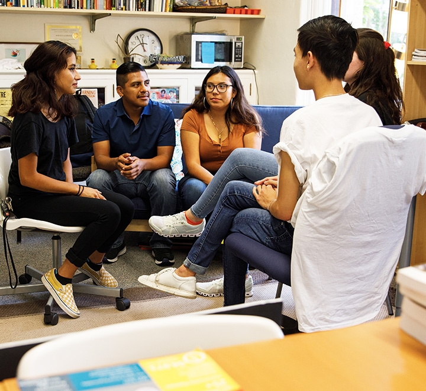
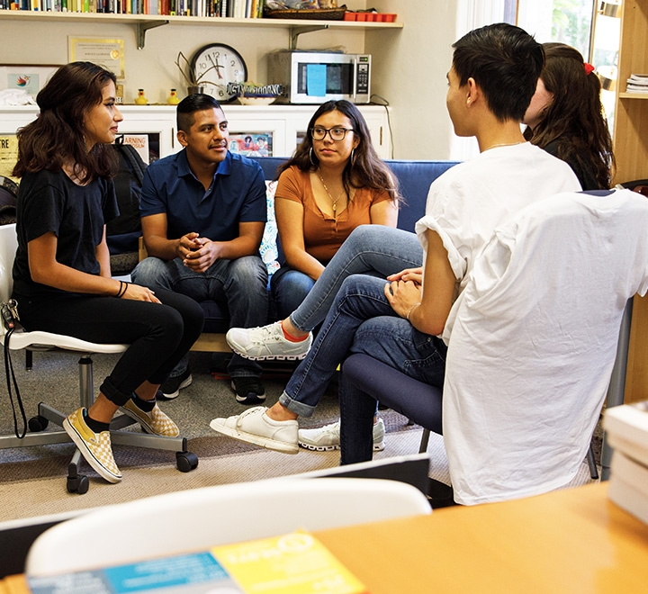
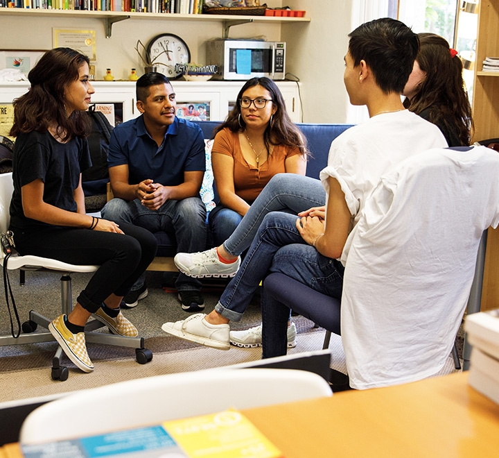

Itzel Morales
I have a passion for learning anything about Psychology. I chose this major because it was interesting to me. Learning about the mind is nice and all but I would like to help people with their mental health and to help them feel like they are not alone in discovering themselves. To embarrass themselves for who they are and to not be ashamed of being a bit different than others. I had that feeling and I don't want others to feel like that so being able to help will make me happy working in the psychology field.
I got my Bachelor degree at UCR with a psychology major. I am looking for a job to get more experience in the field and get the feel of the environment I will be working in the future. I also want to have more connections and build up my skills for future psychology jobs. I have volunteered in studies to be studied for their experiments. This made me more interested in psychology the way that it was set up and having people come in and volunteer to study for their research. I have many skills such as problem solving and innovative ideas. I am a quick learner and enthusiastic. I also have good listening skills. I am an outgoing person who loves helping people in need and is kind. To be able to experience this will help me open my eyes to see what my future can look like. If I really do fit in this field.
I am hoping to be able to gain more skills than I have now. I want to be able to work in these environments and be able to do my job efficiently in the future. I would hope you would consider me for your job and I will perform to the best of my abilities.
Experience
Volunteer Study
• Volunteered to be studied in a experiment
• Answered questions
• Experience with following directions in a study
Kessler Scholars Program
• Responsible of attending workshops
• Atteding mettings
Peer Mentor
• Ran sessions to help students learn how to transition highschool to College
• Helped students to book appointments to the ARC
• Created a planner of goals to help student with thier education
• Helped 3 student to be organized and help them get in touch with resources around campus
Education
UC Riverside
Portfolio


 

